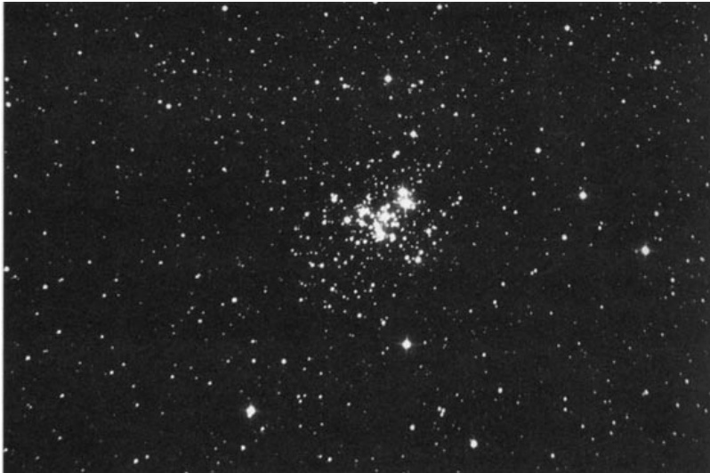

伪彗星星团 · False Comet Cluster (NGC 6231)
在浩瀚星海中，有一个天体能够完美地欺骗人类的双眼——它那横亘2°的延展形态，让每一位初次目睹它的观星者都忍不住惊呼"彗星！"这个令人误解的伪装者，正是NGC 6231及其周围的恒星集团。
Had the 18th-century French comet hunter Charles Messier lived farther south than Paris, he most certainly would have noticed the bright 2°-long "comet" that perpetually shines in the Scorpion's Tail. I'm confident Messier would have noticed it, because my wife, Donna, never fails to discover the same "comet" each time she looks upon the stunning Scorpius Milky Way with her unaided eyes from Hawaii.
如果18世纪法国彗星猎手查尔斯·梅西耶生活在比巴黎更南的地方，他必定会注意到天蝎座尾部永远闪耀着长达2°的明亮"彗星"。我确信梅西耶会发现它，因为我的妻子唐娜每次在夏威夷用肉眼观测壮丽的天蝎座银河时，总能发现这个"彗星"。
"Of course, the object is not a comet, but it is the most comet-like naked-eye spectacle in the heavens that is not a comet."
"当然，这并非真正的彗星，但它是夜空中最像彗星的非彗星天体。"
这个伪彗星的"头部"由疏散星团NGC 6231（考德维尔76号天体）构成，仅位于4等双星天蝎座ζ¹²星北侧30角分处；而它的"尾巴"则是北方延展的大型疏散星团特朗普勒24。虽然这些天体在星表中各有编号，但它们同属天蝎座OB1星协这个发光恒星集团。
历史溯源 · Historical Origins
Most sources credit Nicolas Louis de Lacaille for discovering NGC 6231 during his exploration of the southern skies from the Cape of Good Hope in the 1750s. But true credit belongs to long-forgotten Giovanni Batista Hodierna, an astronomer at the court of the Duke of Montechiaro, who compiled a catalog of nebulous objects that he observed with a simple 20× Galilean refractor.
多数资料将NGC 6231的发现归功于尼古拉·路易·德·拉卡伊，认为是他1750年代在好望角观测南天时发现的。但真正的荣誉应属于被遗忘已久的蒙特基亚罗公爵宫廷天文学家乔瓦尼·巴蒂斯塔·霍迪尔纳——这位学者用简易的20倍伽利略折射望远镜编撰了星云状天体表。
Printed in Palermo in 1654, his work listed 40 nebulous objects, 19 of which (NGC 6231 included) were of his own discovery. NGC 6231 was the seventh listing under his Class I, Lum-inosae ("stars visible to the naked eye").
其1654年于巴勒莫出版的著作中记载了40个星云状天体，其中19个（包括NGC 6231）是他本人的发现。NGC 6231被列为第一类"肉眼可见恒星"中的第七个条目。
"Of course, NGC 6231 is so bright and obvious that skywatchers throughout time would have known of its existence, though not necessarily its true nature."
"当然，NGC 6231如此明亮显眼，历代观星者都必然知晓其存在，尽管未必了解其真实本质。"
恒星组成 · Stellar Composition
Today we recognize NGC 6231 as one of the youngest open clusters in the heavens. Its precise age, however, appears to be a matter of some debate. Most estimates place its age somewhere between 3.8 and 6.5 million years, though as recently as 1999 Argentine astronomer Gustavo Baume and his colleagues have found stars as old as 10 million years that may be associated with the cluster.
今天我们确认NGC 6231是天空中最年轻的疏散星团之一。然而其确切年龄仍存争议：多数估算认为其年龄介于380万至650万年之间，但1999年阿根廷拉普拉塔天文台的古斯塔沃·鲍梅及其同事发现该星团可能包含年龄达1000万年的恒星。

In the cluster's 93 stars, many are luminous O- and B-type supergiants, including two Wolf-Rayet stars, 6 Beta Cephei stars, several P Cygni-type eruptive variables, and several eclipsing binaries.
在星团93颗成员星中，众多是明亮的O型和B型超巨星，包括2颗沃尔夫-拉叶星、6颗仙王座β型变星、数颗天鹅座P型爆发变星以及数颗食双星。
"If we accept a distance of 6,000 light-years to NGC 6231, the cluster would span nearly 25 light-years of space while the size of the association would be 10 times greater."
"若采用NGC 6231距离地球6,000光年的数据，该星团在空间中的跨度接近25光年，而其所在星协的规模可达此数值的十倍。"
小罗伯特·伯纳姆指出，倘若NGC 6231与地球的距离同昴星团相当，这两个天体群在视直径上将不相上下。但NGC 6231成员星的个体亮度将远超昴宿诸星约50倍，其中最亮恒星的视亮度可达天狼星级别。
观测指南 · Observation Guide
| 参数 Parameters | 数值 Value |
|---|---|
| 类型 Type | 疏散星团 Open Cluster |
| 星座 Constellation | 天蝎座 Scorpius |
| 赤经 Right Ascension | 16h 54.2m |
| 赤纬 Declination | -41° 50′ |
| 视星等 Apparent Magnitude | 2.6 |
| 视直径 Apparent Diameter | 14.0′ |
| 距离 Distance | 6,000 光年 light-years |
| 发现者 Discoverer | Giovanni Batista Hodierna (1654) |
| 考德维尔编号 Caldwell Number | 76 |
J. HERSCHEL: A fine bright large cluster pretty rich, class VII. 10', stars [from] 10[th to] 13th magnitude. Place of a double star 5th magnitude, the preceding [western] but one of 7.
约翰·赫歇尔观测记录：这是一个明亮的大型星团，结构相当致密，属VII级。直径约10角分，成员星亮度介于10至13等之间。其位置包含一颗5等双星（位于星团前缘偏西处），另有一颗7等单星与之相邻。
观测体验 · Observing Experience
From Hawaii NGC 6231 becomes visible in twilight, when 3rd-magnitude stars start to appear. As the sky darkens, the cluster, seen through 7×35 binoculars, seems to gradually energize into a ball of shimmering starlight.
在夏威夷观测时，NGC 6231星团在暮光中初现端倪，当三等星开始显现之际。随着天色渐暗，通过7×35双筒望远镜可见这个星团逐渐苏醒为闪烁的星辉之球。
Shortly thereafter a nearby asterism of stars resembling a bent Eiffel Tower appears. This is part of the aforementioned Scorpius OB1 Association, with Trumpler 24 at the northern end and NGC 6231 and Zeta1,2 Scorpii at the southern end. The two clusters are joined in celestial longitude by parallel strands of stars, which, with a little imagination, look like strands of mozzarella cheese stretching from a slice of pizza.
稍后附近会出现一个形似弯曲埃菲尔铁塔的星群结构。这属于前述天蝎座OB1星协的组成部分——其北端是特朗普勒24星团，南端则分布着NGC 6231与天蝎座ζ¹、ζ²双星。两个星团在天
🔒 受限于篇幅，本文仅展示部分样章。O'Meara 先生完整的观测手记、实测数据及未公开的独家配图，请参阅原著双语典藏版。
👉 立即在闲鱼获取《DEEP-SKY COMPANIONS》中英双语高清典藏版